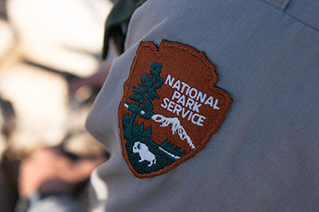
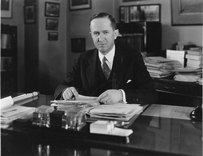
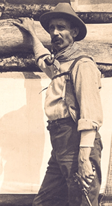

America’s national parks invite visitors to step into some of the most breathtaking landscapes on Earth. Created to protect natural environments while welcoming visitors from around the world, the national parks reflect a deep history of conservation, exploration, and public enjoyment. From their founders to the dedicated rangers, scientists, and advocates who care for these lands today, the national parks spark curiosity, inspire adventure, and encourage respect for the natural world. Whether you visit these parks to hike, learn, or simply admire the beautiful views, each park provides its own unique experience.
While the National Park Service has a long and influential history, its development and history can be traced through several key milestones. In 1864, Congress donated Yosemite Valley to California for preservation, which set the precedent for protection of scenic lands. This idea gained national momentum in 1872, when Congress established Yellowstone National Park as an area that was designated for the enjoyment of the people of the United States and placed it under the authority of the Secretary of the Interior. In the years that followed, additional national parks and monuments were created, many of which were across the American West.
On August 25, 1916, President Woodrow Wilson signed the “Organic Act,” officially creating the National Park Service within the Department of the Interior. This agency was tasked with protecting the 35 national parks and monuments that were already established, as well as those that would be added in the future. The system expanded in 1933 when an executive order transferred 56 national monuments and military sites to National Park Service management, which was one of the first major steps toward the national parks system that we have today. Further growth occurred when Congress signed the General Authorities Act of 1970, which recognized the National Park System as a collection of natural, historic and recreational areas across every region of the country.
While continuing its original mission of preservation and public enjoyment, the National Park Service has also become a leader in preserving cultural heritage, environmental protection, community revitalization, as well as a pioneer in the push to preserve America’s open lands. Today, the National Park System includes more than 400 protected areas covering over 84 million acres across all 50 states, Washington D.C., and U.S. territories including American Samoa, Guam, Puerto Rico, Saipan, and the Virgin Islands. Supported by more than 20,000 dedicated employees, these parks welcome visitors while preserving the natural and historic elements that define the nation.

The national parks we know and love today exist because of influential individuals whose ideas, persistence, and commitment to preservation shaped the future of protected lands in the United States.
Initially hired as Stephen Mather’s assistant, Horace Albright worked with him to create a parks bureau that led to the creation of the National Parks Service on August 25, 1916. Between 1917 and 1919, Albright served as acting director of the National Parks Service , and then became superintendent of Yellowstone National Park and the agency’s field director. As superintendent, Albright wanted to use Yellowstone as a model for how a park would be managed under the newly formed National Park Service. Many of the current policies stem from his initiatives including visitor services and park museums. Albright also played a role in expanding Grand Teton National Park to its current park boundaries. In 1929, he became the second director of the National Parks Service, where one of his contributions was getting all of the war department sites placed under National Parks Service control.

Unhappy in his marriage, Horace Kephart retreated to the wilderness of the Smoky Mountains in search of a new life. Frightened by the rapid deforestation and clear cutting, he began writing articles advocating for the preservation of the region as a national park. George Masa, a skilled photographer, gained recognition for his images of the Smoky Mountains. Kephart and Masa quickly became friends, collaborating on maps for the proposed park and for sections of the Appalachian Trail. Masa’s photographs paired with Kephart’s writings were used in promotional materials to support the creation of the national park. Inspired by their work, John D. Rockefeller Jr. donated $5 million to help purchase the lands for the park. Although both Kephart and Masa passed away before the park was completed, President Franklin D. Roosevelt secured $1.5 million in funds to create Great Smoky Mountains National Park.


Due to his advocacy for the parks, Stephen Mather helped Congress establish the National Park Service in 1916. After becoming the first director in 1917, he focused on improving park access, promoting development, and encouraging public use, often contributing his own money to support these efforts. Under his leadership, the National Park Service expanded with the addition of Shenandoah, Great Smoky Mountains, and Mammoth Cave National Parks.

From a young age, John Muir developed a deep love for nature, often wandering through the mountains that would later become Yosemite National Park. During his explorations, he reflected on human impact on the wilderness and began warning about human threats to these lands. To inspire conservation, he wrote many articles and books, urging people to protect the natural world. Muir became politically active to prevent commercial development in Yosemite and helped establish the Sierra Club, an organization dedicated to preserving wilderness. In 1903, President Theodore Roosevelt spent four days camping with Muir in Yosemite, where Muir explained the importance of preserving the wilderness and untouched land. This experience influenced Roosevelt to protect 148 million acres of forest and establish 5 new national parks during his presidency.

Theorodre Roosevelt is often called “the conservation president” as he doubled the number of sites within the National Park System. As President from 1901 to 1909, he signed legislation creating five new parks: Crater Lake, Oregon; Wind Cave, South Dakota; Sullys Hill, North Dakota; Mesa Verde, Colorado; and Platt, Oklahoma (now part of Chickasaw National Recreation Area. He also established the Antiques Act of June 8, 1906, which enabled himself and succeeding Presidents to establish historical landmarks and structures as national monuments. He declared Devils Tower in Wyoming, El Morro in New Mexico, Montezuma Castle in Arizona, and Petrified Forest in Arizona all national monuments under this act. He also worked to protect a large portion of the Grand Canyon.

In 1927, George Meléndez Wright became Assistant Park Naturalist at Yosemite National Park and was the first Hispanic person to occupy a professional role in the National Park Service. His contributions included writing history articles for Yosemite Nature Notes, serving as a teacher of field classes in the park, and helping develop the Yosemite Museum. Through his work, Wright noticed that there was a significant lack of staff who were dedicated to wildlife, which encouraged him to establish a wildlife biology plan for the National Parks Service in 1928. Using family inheritance, he single-handedly funded this mission until 1931, when funding for wildlife biology became a regular percentage of the National Parks Service budget. In 1934, he was appointed to head the National Resources Board by President Franklin D. Roosevelt, where he spent two years traveling to and researching areas where new national parks could be established, one of which ended up becoming Everglades National Park. Although many of his policies were not fully acted on until decades after his death, his ideas and values are still seen in modern park management approaches.

Following in his father’s military footsteps, Charles Young became the first black officer in the army to receive the rank of captain in 1901. In 1903, Captain Young and his troops were sent to Sequoia and General Grant National Park as part of the army’s role of protecting national parks. Young was named acting superintendent, becoming the first African-American to be put in charge of a national park. Under his leadership, he and his soldiers kept the park safe from poachers and from the ranchers whose grazing sheep destroyed the parks’ land. The soldiers also completed the first wagon road into the Giant Forest of Sequoia, something no previous superintendent has been able to achieve.

Since 2021, the National Park Service has teamed up with Indigenous peoples and tributes to ensure that Native perspectives are included in decision making. In 2022, they established a co-stewardship policy that increases the role of American Indian and Alaska Native Tribes, Alaska Native entities, and the Native Hawaiian community in federal land management by providing a stronger framework, beyond traditional consultation, to help park managers facilitate and support meaningful partnerships with Tribes.
The mission of the National Park Service centers on protecting the nation’s natural landscapes and culture while making them accessible for people to learn from, enjoy, and be inspired by, both now and in the future. Through partnerships and collaborations, the National Park Service works to share the benefits of conservation and outdoor recreation across communities in the United States and around the world.